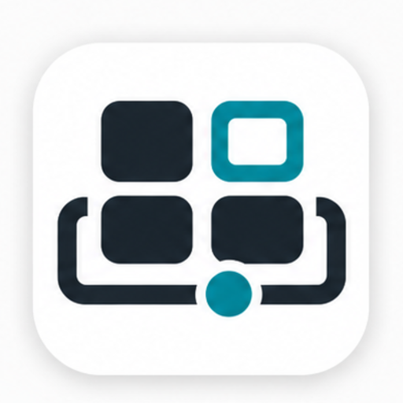
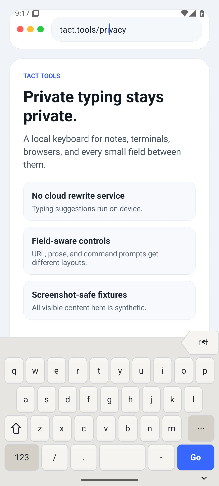
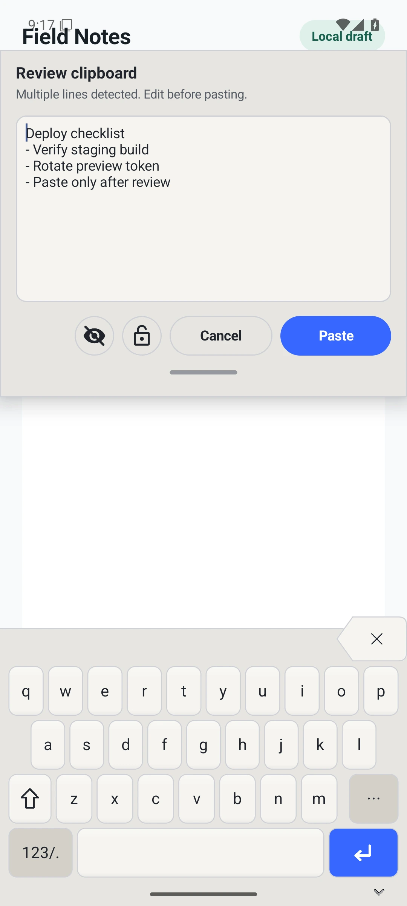
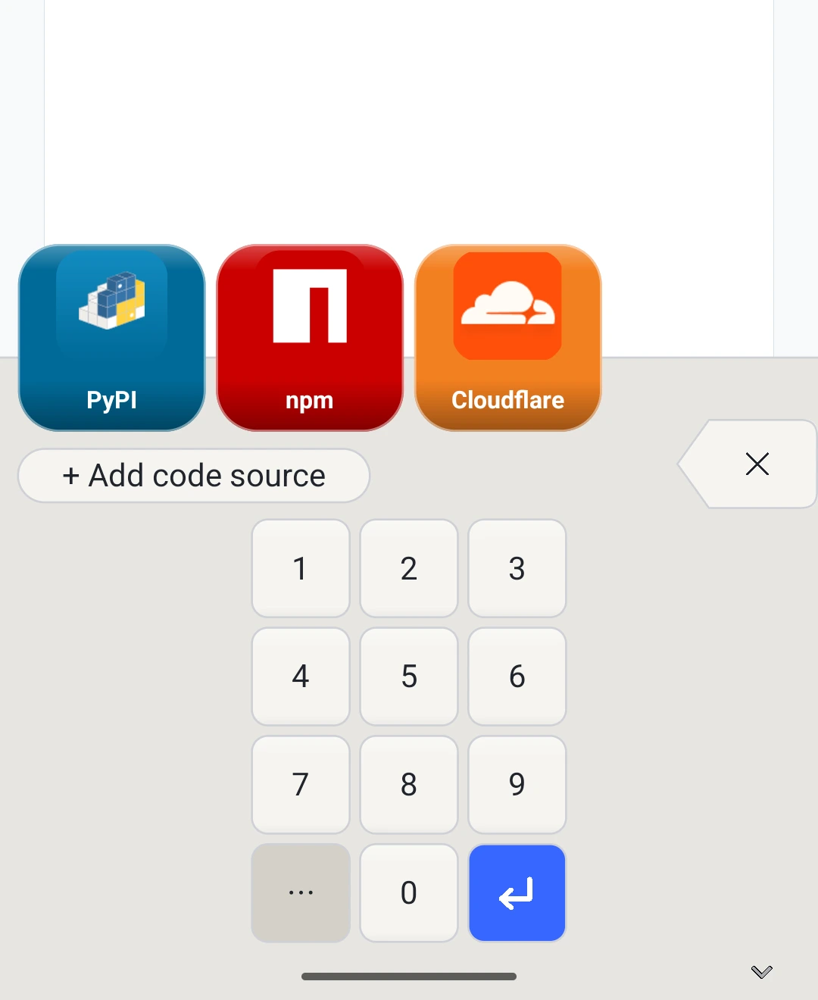
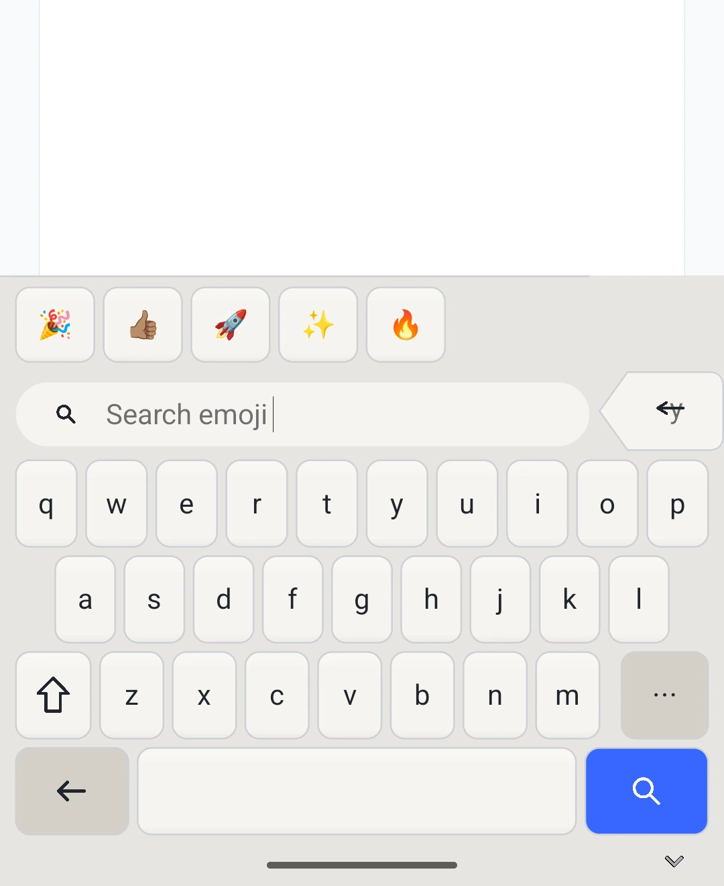
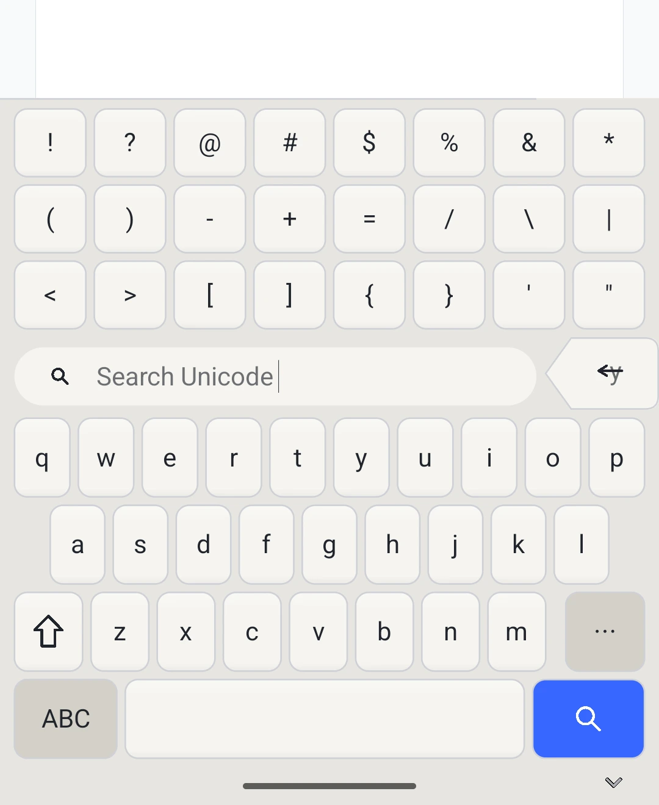
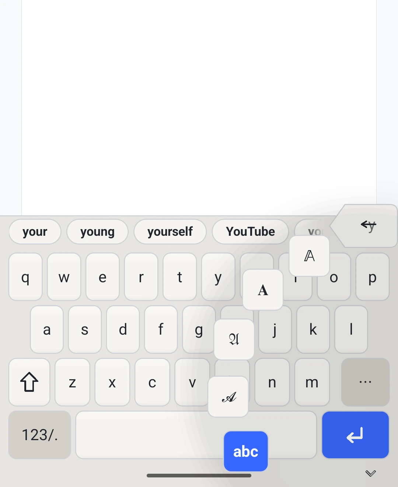
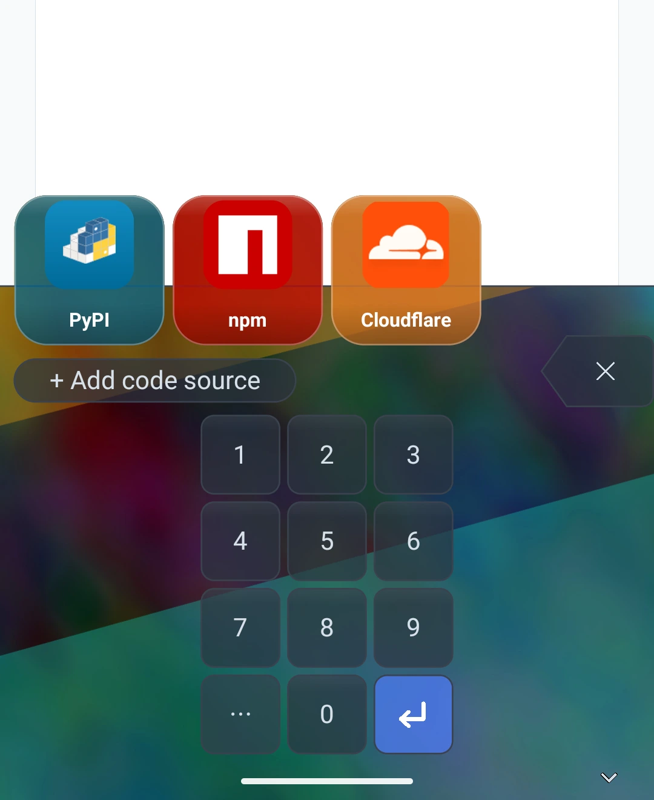

Prose stays calm
A stable letter layout, local suggestions, a wide spacebar, and high-consequence controls kept apart.

TactAndroid keyboard in active development
A field-aware Android keyboard for notes, terminals, private fields, symbols, emoji, and one-time codes.
Different fields, different rules
Tact treats the focused field as the contract. A note, URL bar, SSH prompt, and one-time-code field should not receive the same keyboard behavior.
A stable letter layout, local suggestions, a wide spacebar, and high-consequence controls kept apart.

Browser fields promote punctuation and action labels that match the place you are typing.
Command entry gets Esc, Tab, modifiers, shell punctuation, and a visible Enter key.
Tools where you type

Multiline clipboard content is held for review before it reaches the field.

Managed OTP sources appear as recognizable source buttons inside the keyboard.

Recent emoji and search sit in the same reachable keyboard surface.

Unicode search keeps punctuation, math, currency, and special symbols close.

Switch letter styles from the keyboard when plain text needs more expression.

Custom backgrounds preserve legibility while giving the keyboard a personal surface.
Terminal safety
Terminal mode is built for command entry: no prose rewrite, no hidden submit target, no accidental newline paste. The controls are visible because the cost of a surprise is high.
Privacy posture
Tact is designed around explicit field policy. Help appears where it belongs, and sensitive contexts suppress behavior that would be wrong there.
The current keyboard story is local-first. Assistance should be deliberate, visible, and reversible.
Password, card, OTP, and private contexts suppress learning and preview surfaces.
Clipboard review is tied to explicit paste behavior rather than ambient harvesting.
The product shots come from the Android emulator with synthetic text and managed fixture data.
Preview
Tact is under active development. The current implementation covers the keyboard renderer, field policies, terminal controls, clipboard review, emoji and Unicode browsers, OTP source surfaces, writing scripts, and custom backgrounds.